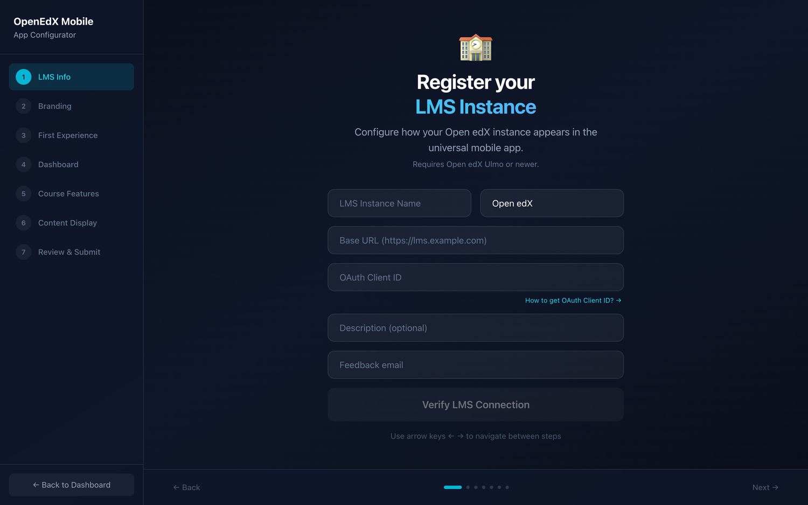
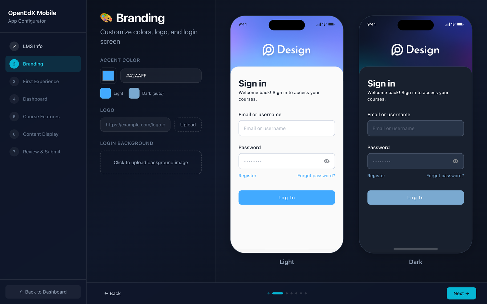
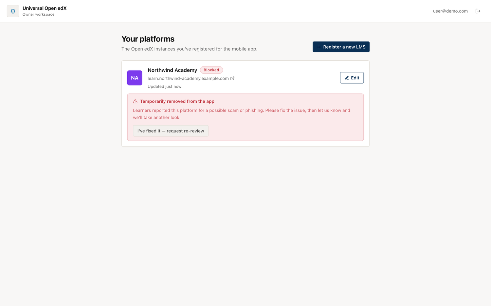

Register your LMS (for owners)¶
If you run an Open edX platform, register it here so learners can find it in the app. It takes a few minutes.
What you need first¶
- Your platform's URL (for example
https://learn.example.com). - A mobile OAuth client ID on your Open edX instance.
Creating the OAuth client
In your Open edX admin, go to Django OAuth Toolkit → Applications and create a public client with the Resource owner password-based grant type. Enable Mobile course available on the courses you want in the app. The wizard links to the full guide.
1. Create an account and open the wizard¶
Sign in at the registry (openedx-lms.stepanok.com) and choose Register a new LMS. The wizard walks you through it.

2. Fill in the wizard¶
| Step | What you set |
|---|---|
| LMS info | Name, platform name, URL, OAuth client ID, description, support email |
| Branding | Accent color and logo — the app themes itself to these |
| First experience | Whether learners can browse courses before signing in |
| Dashboard | Gallery or list layout |
| Course features | Progress, navigation and other per-course toggles |
| Content display | How unsupported units are handled |
| Review & submit | Confirm everything and register |
The Branding step previews your app live, in both light and dark mode, as you change the accent colour and logo — so you see exactly what learners will get.

On the first step the wizard checks, live, that your URL is reachable and that the OAuth client exists — so you catch mistakes before submitting.
3. It goes live, then gets reviewed¶
New platforms are approved automatically, so yours appears in the app catalog right away. It's marked awaiting review until an administrator confirms it's set up correctly. You don't need to do anything for that step.
Your workspace¶
Signing in as an owner shows your platforms: their status, and a link to edit each one in the wizard.
- Live — in the catalog and reviewed.
- Live · awaiting review — in the catalog, an admin hasn't confirmed it yet.
- Blocked — removed from the app after complaints (see below).
If your platform is blocked¶
If learners report your platform and an administrator decides it shouldn't be in the app, it's temporarily removed and you'll see why in your workspace (and by email).

Fix the issue, then click “I've fixed it — request re-review.” That flags your platform for an administrator to look again and restore it.